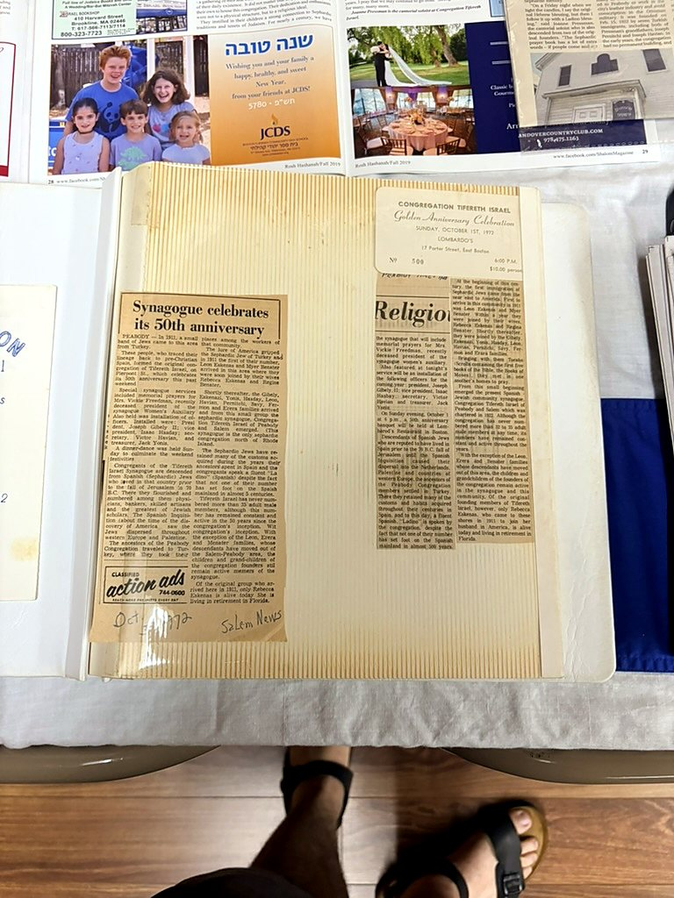

1922
Founders & Charter Members
The original plaque as a historical artifact, with a readable transcription on the archive page.
Newspaper coverage, historical documents, plaques and readable transcriptions from more than a century of CTI history.
The original plaque as a historical artifact, with a readable transcription on the archive page.

The photographed plaque preserves a century of congregational leadership.

Newspaper coverage and anniversary ephemera preserved in their original scrapbook presentation.
Oct. 4, 1976, p. 3. A surviving archival clipping discusses Joseph Gibely, CTI’s February 1922 founding, and Peabody’s Sephardic community.
Source: JHC I-581, Box 1, Folder 15, image 033. Exact expanded newspaper title remains under verification.
March 1, 1979. A primary-source address by CTI president Joseph Gibely records the congregation’s founding date, Ladino vocabulary, customs, migration history, and traditions.
Source: JHC I-581, Box 1, Folder 15, images 012–023.

The Salem Evening News profile of CTI, now presented with a full readable transcription.

Oct. 31, 1992 · A News staff report. Verified coverage of CTI and the Nov. 4 Sephardic quincentennial commemoration.
April 14–20, 1995, p. 12 · Judith S. Antonelli, Advocate Staff. Community-history coverage placing CTI within Jewish Peabody.
May 18, 1997. CTI’s own anniversary chronology records the Feb. 15, 1922 charter and preserves charter members, presidents, religious leaders and milestones.
Jan. 19, 2001, p. 25 · Gary Band, Jewish Journal Staff. A substantial profile of CTI and its early worship locations.

Jewish Journal coverage from CTI’s 90th-anniversary year.
Verified 2012 coverage documents the Oct. 21 celebration and the Ladies Auxiliary’s 90th Anniversary Commemorative Cookbook.
Nov. 1, 2018 · Elliot Hershoff, President, CTI.
Aug. 29, 2019, p. 3 · Michael Wittner, Journal Staff. Coverage of CTI’s Ladino blessings, Sephardic prayer customs, and changing membership.
May 16, 2019 · Michael Wittner. CTI family history through Ralph Yonis and the dedication of Private Ralph Yonis Corner near Main and Pierpont Streets.
June 9, 2022, p. 8 · Steven A. Rosenberg, Journal Staff. Independently verified centennial coverage.

Centennial coverage preserved as the original newspaper artifact.